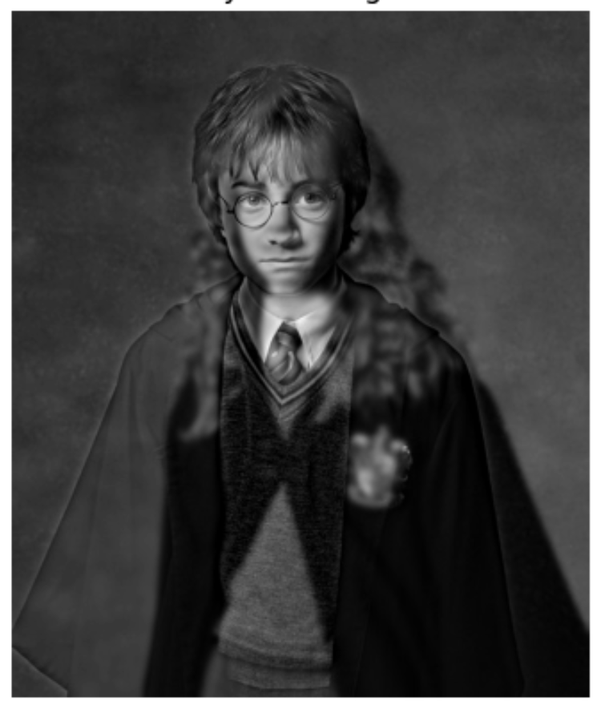
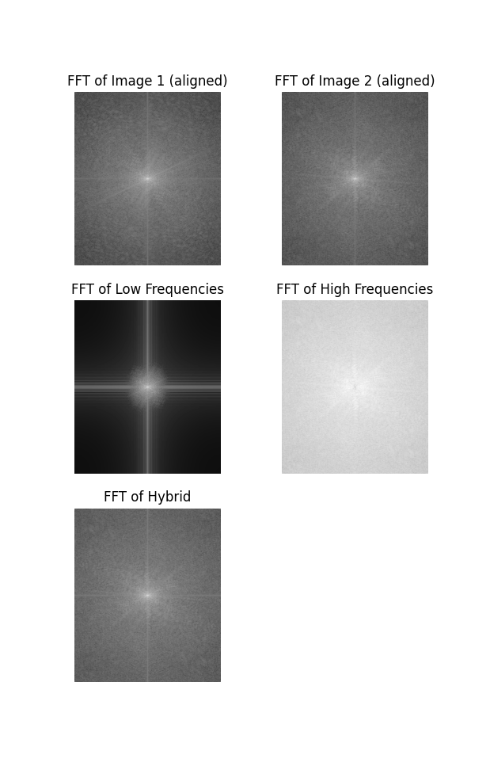
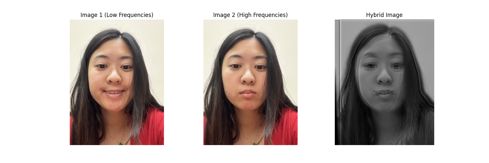
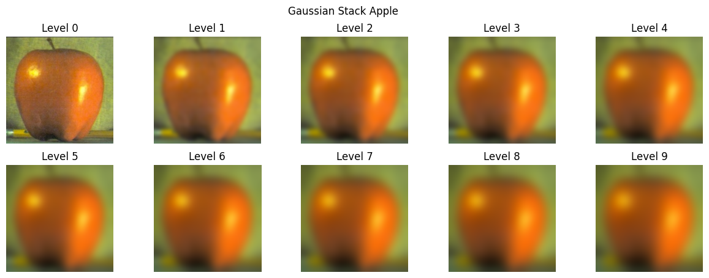
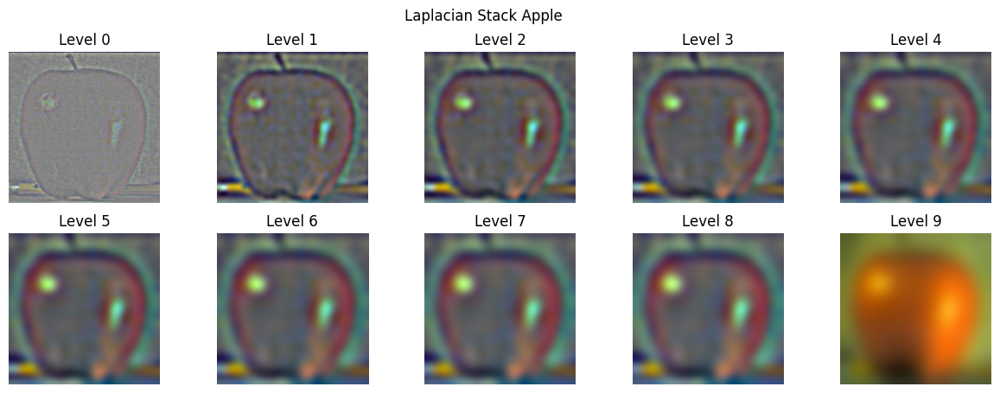
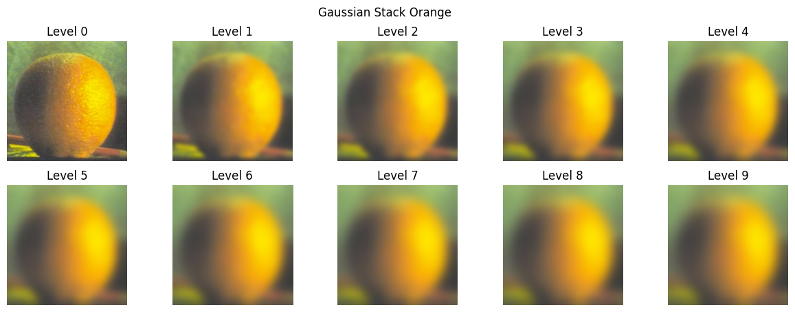
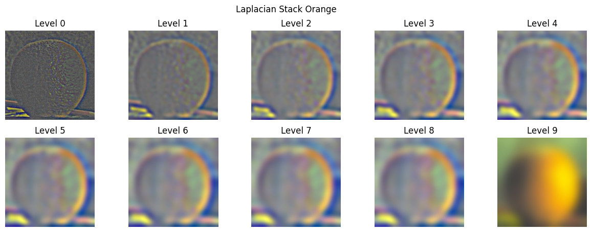
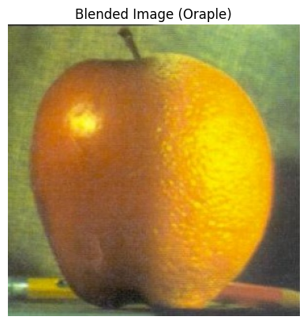

Original Image

The gradient of an image represents the rate at which the intensity values change. This is basically highlighting the edges within the image. To compute the gradient magnitude, we first calculate the partial derivatives of the image with respect to the x and y directions. We do this by convolving the image with the finite difference operators. After we get the partial derivates, we calculate the gradient magnitude at each pixel by taking the euclidean norm.
Applying finite difference operators directly to the image results in a noisy gradient magnitude image due to sensitivity to noise. Pre-smoothing the image with a Gaussian filter reduces noise. This lets us have cleaner edge detection in the gradient magnitude image. Using DoG filters combines smoothing and differentiation in one step. The equivalence of the two methods shows us the associative property of convolution. It also demonstrates the effectiveness of DoG filters in edge detection tasks!
Now, to evaluate the sharpening algorithm, I blurred a sharp image and then resharpened it. By comparing the sharpened image and the original image, we can have a sense of reconstruction loss.
Although the colors are more contrasted, there is a lack of detail and clairty in the resharpened image. From afar, it looks pretty similar to the original image and certainly "sharper" than the blurred image with brighter colors. However, there is a noticeable reconstruction loss in the resharpened image.
From further away:
Close up:
Fourier Analysis:
I believe this one didn't work well because the images were seemingly too similar. The only difference you can really see at low frequencies is the smile.
First construct the gaussian stack for each image and then use the difference between the gaussian layers to construct the laplacian stacks:
   Then we apply create a gaussian stack of the mask, and put it all together to blend the images:


A portal with a unicorn was the original intention, but you can see the blending ability better with a larger radius.